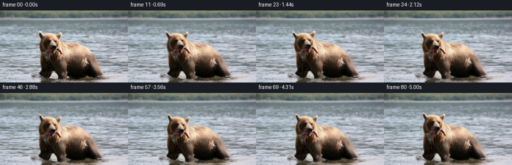
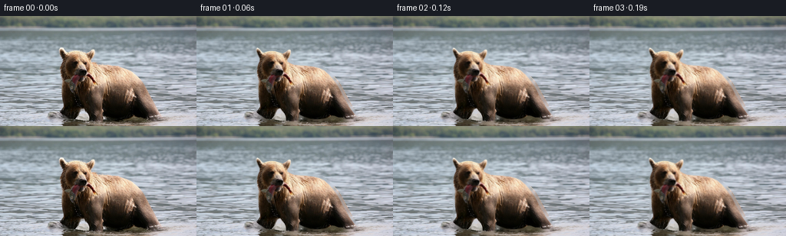

候选 01 · 2026-11-08T20:48:28.682932+00:00 · 点开播放与检查图
inspection.png

transition_check.png

代码变化
--- 上一保存版本
+++ 本次保存版本
@@ -0,0 +1,158 @@
+"""Animate a wildlife photograph with articulated image-space motion.
+All imagery is sampled from the supplied frame; no external assets are used.
+"""
+from pathlib import Path
+import math
+import numpy as np
+import cv2
+from PIL import Image, ImageDraw, ImageFilter
+from artifact_io import save
+
+ROOT = Path(__file__).resolve().parent
+W,H = 256,144
+Y,X = np.mgrid[:H,:W].astype(np.float32)
+
+def smooth(a,b,x):
+ v = np.clip((x-a)/(b-a),0,1)
+ return v*v*(3-2*v)
+
+def remap(im,x,y):
+ return cv2.remap(im,x.astype(np.float32),y.astype(np.float32),cv2.INTER_LINEAR,borderMode=cv2.BORDER_REFLECT_101)
+
+def matte(src):
+ outline=[(78.2,43.1),(79.0,41.1),(80.8,41.9),(83,44.2),(86.7,48.1),
+ (90.6,46.4),(96.1,45.4),(102.9,46.0),(109.8,48.3),(112.5,49.3),
+ (116.8,46.6),(120.5,43.5),(122.5,43.9),(123.1,46.0),(122.2,50.4),(120.4,54.7),(119.1,57.5),
+ (121.0,61.4),(126.3,63.6),(135,64.6),(143.2,64.9),(152.6,66.2),(160.4,68.0),
+ (165.9,70.9),(172.5,76.8),(178.0,83.3),(182.7,89.6),(186.5,96.1),(190.5,104.1),
+ (194.9,112.0),(199.1,119.2),(205.0,127.2),(208.3,131.1),(207.5,133.1),(202.6,134.8),
+ (195.0,134.8),(190.2,132.7),(184.7,132.4),(179.8,130.6),(176.2,130.0),(172.4,132.8),
+ (165,134.6),(157.5,135.0),(148.0,134.6),(140.5,132.0),(133.3,128.4),
+ (133.3,133.0),(131.9,136.6),(126.5,138.1),(120.0,137.9),(116.8,136.8),(116.0,132.1),
+ (114.6,127.7),(110.0,122.0),(108.0,120.4),(104.8,123.4),(101.2,130.9),(97.8,136.0),
+ (94.1,135.9),(88.2,133.6),(83.7,130.4),(78.8,126.7),(78.0,124.5),(79.7,122.2),
+ (80.6,118.8),(80.6,108.0),(80.5,99.0),(80.1,89.0),(79.9,82.2),(79.0,78.4),
+ (78.6,73.2),(79.3,68.9),(80.1,64.3),(82.2,58.7),(82.6,55.3),(80.0,50.1),(78.6,46.1)]
+ s=4
+ m=Image.new('L',(W*s,H*s),0)
+ ImageDraw.Draw(m).polygon([(round(x*s),round(y*s)) for x,y in outline],fill=255)
+ m=m.filter(ImageFilter.GaussianBlur(.9))
+ return np.asarray(m.resize((W,H),Image.Resampling.LANCZOS)).astype(np.float32)/255
+
+def pose(t):
+ # A watchful bear shifts weight, raises its catch, then makes two small chews.
+ # All functions have zero displacement at t=0.
+ headx = -1.7*math.sin(1.05*t) - .42*math.sin(2.4*t)
+ heady = -2.5*math.sin(1.48*t) + .38*math.sin(3.2*t)
+ angle = -.075*math.sin(1.3*t) + .023*math.sin(2.7*t)
+ advance = -2.8*smooth(.35,4.6,t)
+ settle = .55*math.sin(2.0*t)
+ return headx,heady,angle,advance,settle
+
+def displace(x,y,t):
+ hx,hy,ang,adv,bob = pose(t)
+ # Body sway declines toward the feet; limbs keep their support in the water.
+ upper = 1-smooth(107,138,y)
+ dx = adv*(.48+.52*upper) + .38*math.sin(1.8*t)*upper
+ dy = bob*upper
+ chest = np.exp(-((x-144)/37)**2-((y-91)/28)**2)
+ breath=.008*math.sin(2.25*t)
+ dx += breath*(x-145)*chest
+ dy += breath*(y-110)*chest
+ # Rotate head and attached fish, blending into the neck rather than cutting it out.
+ wh=(1-smooth(77,110,y))*(1-smooth(117,146,x))
+ rx=x-109; ry=y-83
+ dx += wh*((math.cos(ang)-1)*rx-math.sin(ang)*ry+hx)
+ dy += wh*(math.sin(ang)*rx+(math.cos(ang)-1)*ry+hy)
+ # Gentle jaw pulses and a dangling fish flex, rooted at the bite.
+ chew=(.48*math.sin(8.4*t)*smooth(.7,1.25,t)*(1-smooth(2.7,3.2,t))
+ +.34*math.sin(9.5*t)*smooth(3.6,4.0,t))
+ jaw=np.exp(-((x-106)/10)**2-((y-82)/9)**2)
+ dy += chew*jaw
+ fishleft=np.exp(-((x-94)/6.3)**4-((y-92)/13)**4)*smooth(77,97,y)
+ fishtail=np.exp(-((x-121)/7)**4-((y-84)/8)**4)*smooth(112,127,x)
+ flick=(.78*math.sin(5.7*t)+.25*math.sin(12*t))* (.6+.4*math.cos(.8*t)**2)
+ dx+=flick*fishleft
+ dy+=.48*math.sin(6.4*t)*fishleft+flick*.9*fishtail
+ # Slow front-paw placements. Very small lifts are appropriate in shallow water.
+ a=smooth(1.0,2.4,t); lift=math.sin(math.pi*a)
+ leg=np.exp(-((x-125)/10)**4)*smooth(104,133,y)
+ dx+=(-1.8*a)*leg
+ dy+=(-2.1*lift+.45*a)*leg
+ b=smooth(2.7,4.1,t); lift2=math.sin(math.pi*b)
+ far=np.exp(-((x-91)/9)**4)*smooth(101,132,y)
+ dx+=(-2.1*b)*far
+ dy+=(-1.6*lift2+.35*b)*far
+ return dx,dy
+
+def water_map(t):
+ depth=smooth(18,142,Y)
+ # Traveling capillary waves advect existing photographic water detail.
+ dx=(.5+.7*depth)*(np.sin(.18*Y+.029*X-1.55*t)-np.sin(.18*Y+.029*X))
+ dx+=.32*depth*(np.sin(.49*Y-.049*X+2.25*t)-np.sin(.49*Y-.049*X))
+ dy=(.16+.18*depth)*(np.sin(.38*Y+.033*X-2.05*t)-np.sin(.38*Y+.033*X))
+ dy+=.13*depth*(np.sin(.10*X-.31*Y+1.1*t)-np.sin(.10*X-.31*Y))
+ damp=smooth(18,30,Y)
+ return X+dx*damp,Y+dy*damp
+
+def add_ripples(frame,alpha,t):
+ # Low-amplitude elliptical waves spread from feet and occasional falling drops.
+ wave=np.zeros((H,W),np.float32)
+ for cx,cy,origin,strength in [(122,136,.25,.55),(88,134,1.0,.42),(123,136,2.15,.7),(87,134,3.9,.55),(191,134,1.5,.25)]:
+ age=t-origin
+ if age<=0:continue
+ radius=4+age*12
+ r=np.sqrt((X-cx)**2+((Y-cy)*4.2)**2+.01)
+ d=r-radius
+ envelope=np.exp(-(d/2.0)**2)*np.exp(-age*.65)*smooth(0,.3,age)
+ wave+=strength*envelope*np.cos(d*1.2)
+ frame += wave[...,None]*(1-alpha[...,None])*np.array([8,9,9],np.float32)
+ return frame
+
+def drops(frame,t):
+ # Tiny gravity-driven glints from the held fish, blended at subpixel resolution.
+ for j in range(17):
+ start=.18+j*.31
+ age=t-start
+ if age<0 or age>.83:continue
+ sx=94.0+1.25*math.sin(j*2.39);sy=99.0
+ ddx,ddy=displace(np.array(sx),np.array(sy),start)
+ xx=sx+float(ddx)+math.sin(j*4.1)*age*1.8
+ yy=sy+float(ddy)+10*age+29*age*age
+ if yy>136:continue
+ alpha=.45*smooth(0,.11,age)*(1-smooth(.62,.83,age))
+ spot=np.exp(-((X-xx)/.37)**2-((Y-yy)/(.55+age*.4))**2)*alpha
+ frame=frame*(1-spot[...,None])+np.array([181,186,174])*spot[...,None]
+ return frame
+
+def generate():
+ src=np.array(Image.open(ROOT/'first_frame.png').convert('RGB'))
+ fsrc=src.astype(np.float32)
+ alpha=matte(src)
+ # Background needed only for newly uncovered slivers along the outline.
+ hole=cv2.dilate((alpha>.025).astype(np.uint8),np.ones((5,5),np.uint8))
+ bg=cv2.inpaint(src,hole*255,5,cv2.INPAINT_TELEA).astype(np.float32)
+ frames=[src.copy()]
+ for n in range(1,81):
+ t=n/16
+ wx,wy=water_map(t)
+ back=remap(bg,wx,wy)
+ # Solve the inverse of our smooth forward deformation.
+ ix=X.copy();iy=Y.copy()
+ for _ in range(5):
+ dx,dy=displace(ix,iy,t)
+ ix=X-dx;iy=Y-dy
+ bear=remap(fsrc,ix,iy)
+ a=remap(alpha,ix,iy)
+ frame=back*(1-a[...,None])+bear*a[...,None]
+ frame=add_ripples(frame,a,t)
+ frame=drops(frame,t)
+ frames.append(np.clip(np.rint(frame),0,255).astype(np.uint8))
+ frames=np.stack(frames)
+ save(frames,ROOT)
+ Image.fromarray(np.uint8(alpha*255)).save(ROOT/'.tmp/matte.png')
+ Image.fromarray(np.uint8(bg)).save(ROOT/'.tmp/background.png')
+ return frames
+
+if __name__=='__main__':
+ generate()
命令 5 · 2026-11-08T20:48:25.062950+00:00/bin/bash -lc "cat > generate.py <<'PY'
\"\"\"Animate a wildlife photograph with articulated image-space motion.
All imagery is sampled from the supplied frame; no external assets are used.
\"\"\"
from pathlib import Path
import math
import numpy as np
import cv2
from PIL import Image, ImageDraw, ImageFilter
from artifact_io import save
ROOT = Path(__file__).resolve().parent
W,H = 256,144
Y,X = np.mgrid[:H,:W].astype(np.float32)
def smooth(a,b,x):
v = np.clip((x-a)/(b-a),0,1)
return v*v*(3-2*v)
def remap(im,x,y):
return cv2.remap(im,x.astype(np.float32),y.astype(np.float32),cv2.INTER_LINEAR,borderMode=cv2.BORDER_REFLECT_101)
def matte(src):
outline=[(78.2,43.1),(79.0,41.1),(80.8,41.9),(83,44.2),(86.7,48.1),
(90.6,46.4),(96.1,45.4),(102.9,46.0),(109.8,48.3),(112.5,49.3),
(116.8,46.6),(120.5,43.5),(122.5,43.9),(123.1,46.0),(122.2,50.4),(120.4,54.7),(119.1,57.5),
(121.0,61.4),(126.3,63.6),(135,64.6),(143.2,64.9),(152.6,66.2),(160.4,68.0),
(165.9,70.9),(172.5,76.8),(178.0,83.3),(182.7,89.6),(186.5,96.1),(190.5,104.1),
(194.9,112.0),(199.1,119.2),(205.0,127.2),(208.3,131.1),(207.5,133.1),(202.6,134.8),
(195.0,134.8),(190.2,132.7),(184.7,132.4),(179.8,130.6),(176.2,130.0),(172.4,132.8),
(165,134.6),(157.5,135.0),(148.0,134.6),(140.5,132.0),(133.3,128.4),
(133.3,133.0),(131.9,136.6),(126.5,138.1),(120.0,137.9),(116.8,136.8),(116.0,132.1),
(114.6,127.7),(110.0,122.0),(108.0,120.4),(104.8,123.4),(101.2,130.9),(97.8,136.0),
(94.1,135.9),(88.2,133.6),(83.7,130.4),(78.8,126.7),(78.0,124.5),(79.7,122.2),
(80.6,118.8),(80.6,108.0),(80.5,99.0),(80.1,89.0),(79.9,82.2),(79.0,78.4),
(78.6,73.2),(79.3,68.9),(80.1,64.3),(82.2,58.7),(82.6,55.3),(80.0,50.1),(78.6,46.1)]
s=4
m=Image.new('L',(W*s,H*s),0)
ImageDraw.Draw(m).polygon([(round(x*s),round(y*s)) for x,y in outline],fill=255)
m=m.filter(ImageFilter.GaussianBlur(.9))
return np.asarray(m.resize((W,H),Image.Resampling.LANCZOS)).astype(np.float32)/255
def pose(t):
# A watchful bear shifts weight, raises its catch, then makes two small chews.
# All functions have zero displacement at t=0.
headx = -1.7*math.sin(1.05*t) - .42*math.sin(2.4*t)
heady = -2.5*math.sin(1.48*t) + .38*math.sin(3.2*t)
angle = -.075*math.sin(1.3*t) + .023*math.sin(2.7*t)
advance = -2.8*smooth(.35,4.6,t)
settle = .55*math.sin(2.0*t)
return headx,heady,angle,advance,settle
def displace(x,y,t):
hx,hy,ang,adv,bob = pose(t)
# Body sway declines toward the feet; limbs keep their support in the water.
upper = 1-smooth(107,138,y)
dx = adv*(.48+.52*upper) + .38*math.sin(1.8*t)*upper
dy = bob*upper
chest = np.exp(-((x-144)/37)**2-((y-91)/28)**2)
breath=.008*math.sin(2.25*t)
dx += breath*(x-145)*chest
dy += breath*(y-110)*chest
# Rotate head and attached fish, blending into the neck rather than cutting it out.
wh=(1-smooth(77,110,y))*(1-smooth(117,146,x))
rx=x-109; ry=y-83
dx += wh*((math.cos(ang)-1)*rx-math.sin(ang)*ry+hx)
dy += wh*(math.sin(ang)*rx+(math.cos(ang)-1)*ry+hy)
# Gentle jaw pulses and a dangling fish flex, rooted at the bite.
chew=(.48*math.sin(8.4*t)*smooth(.7,1.25,t)*(1-smooth(2.7,3.2,t))
+.34*math.sin(9.5*t)*smooth(3.6,4.0,t))
jaw=np.exp(-((x-106)/10)**2-((y-82)/9)**2)
dy += chew*jaw
fishleft=np.exp(-((x-94)/6.3)**4-((y-92)/13)**4)*smooth(77,97,y)
fishtail=np.exp(-((x-121)/7)**4-((y-84)/8)**4)*smooth(112,127,x)
flick=(.78*math.sin(5.7*t)+.25*math.sin(12*t))* (.6+.4*math.cos(.8*t)**2)
dx+=flick*fishleft
dy+=.48*math.sin(6.4*t)*fishleft+flick*.9*fishtail
# Slow front-paw placements. Very small lifts are appropriate in shallow water.
a=smooth(1.0,2.4,t); lift=math.sin(math.pi*a)
leg=np.exp(-((x-125)/10)**4)*smooth(104,133,y)
dx+=(-1.8*a)*leg
dy+=(-2.1*lift+.45*a)*leg
b=smooth(2.7,4.1,t); lift2=math.sin(math.pi*b)
far=np.exp(-((x-91)/9)**4)*smooth(101,132,y)
dx+=(-2.1*b)*far
dy+=(-1.6*lift2+.35*b)*far
return dx,dy
def water_map(t):
depth=smooth(18,142,Y)
# Traveling capillary waves advect existing photographic water detail.
dx=(.5+.7*depth)*(np.sin(.18*Y+.029*X-1.55*t)-np.sin(.18*Y+.029*X))
dx+=.32*depth*(np.sin(.49*Y-.049*X+2.25*t)-np.sin(.49*Y-.049*X))
dy=(.16+.18*depth)*(np.sin(.38*Y+.033*X-2.05*t)-np.sin(.38*Y+.033*X))
dy+=.13*depth*(np.sin(.10*X-.31*Y+1.1*t)-np.sin(.10*X-.31*Y))
damp=smooth(18,30,Y)
return X+dx*damp,Y+dy*damp
def add_ripples(frame,alpha,t):
# Low-amplitude elliptical waves spread from feet and occasional falling drops.
wave=np.zeros((H,W),np.float32)
for cx,cy,origin,strength in [(122,136,.25,.55),(88,134,1.0,.42),(123,136,2.15,.7),(87,134,3.9,.55),(191,134,1.5,.25)]:
age=t-origin
if age<=0:continue
radius=4+age*12
r=np.sqrt((X-cx)**2+((Y-cy)*4.2)**2+.01)
d=r-radius
envelope=np.exp(-(d/2.0)**2)*np.exp(-age*.65)*smooth(0,.3,age)
wave+=strength*envelope*np.cos(d*1.2)
frame += wave[...,None]*(1-alpha[...,None])*np.array([8,9,9],np.float32)
return frame
def drops(frame,t):
# Tiny gravity-driven glints from the held fish, blended at subpixel resolution.
for j in range(17):
start=.18+j*.31
age=t-start
if age<0 or age>.83:continue
sx=94.0+1.25*math.sin(j*2.39);sy=99.0
ddx,ddy=displace(np.array(sx),np.array(sy),start)
xx=sx+float(ddx)+math.sin(j*4.1)*age*1.8
yy=sy+float(ddy)+10*age+29*age*age
if yy>136:continue
alpha=.45*smooth(0,.11,age)*(1-smooth(.62,.83,age))
spot=np.exp(-((X-xx)/.37)**2-((Y-yy)/(.55+age*.4))**2)*alpha
frame=frame*(1-spot[...,None])+np.array([181,186,174])*spot[...,None]
return frame
def generate():
src=np.array(Image.open(ROOT/'first_frame.png').convert('RGB'))
fsrc=src.astype(np.float32)
alpha=matte(src)
# Background needed only for newly uncovered slivers along the outline.
hole=cv2.dilate((alpha>.025).astype(np.uint8),np.ones((5,5),np.uint8))
bg=cv2.inpaint(src,hole*255,5,cv2.INPAINT_TELEA).astype(np.float32)
frames=[src.copy()]
for n in range(1,81):
t=n/16
wx,wy=water_map(t)
back=remap(bg,wx,wy)
# Solve the inverse of our smooth forward deformation.
ix=X.copy();iy=Y.copy()
for _ in range(5):
dx,dy=displace(ix,iy,t)
ix=X-dx;iy=Y-dy
bear=remap(fsrc,ix,iy)
a=remap(alpha,ix,iy)
frame=back*(1-a[...,None])+bear*a[...,None]
frame=add_ripples(frame,a,t)
frame=drops(frame,t)
frames.append(np.clip(np.rint(frame),0,255).astype(np.uint8))
frames=np.stack(frames)
save(frames,ROOT)
Image.fromarray(np.uint8(alpha*255)).save(ROOT/'.tmp/matte.png')
Image.fromarray(np.uint8(bg)).save(ROOT/'.tmp/background.png')
return frames
if __name__=='__main__':
generate()
PY
python generate.py"exit 0